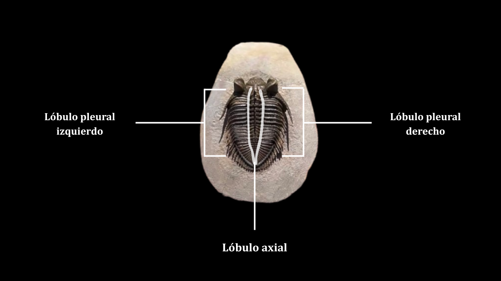
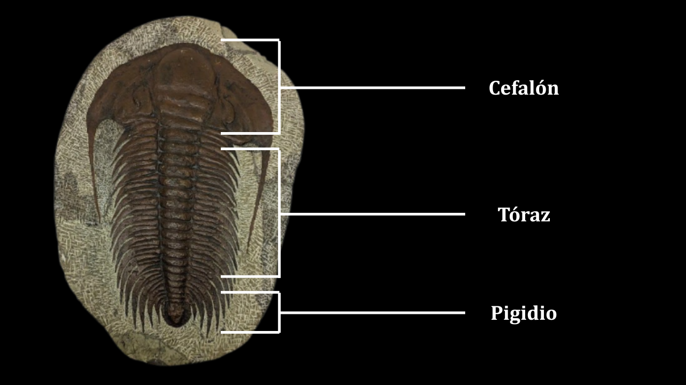
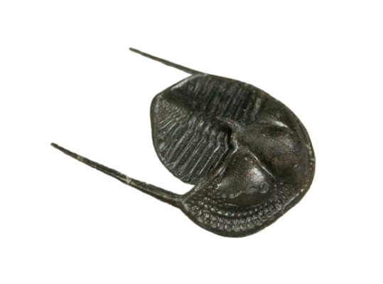
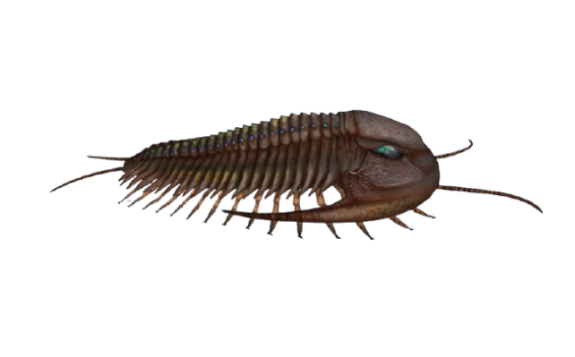
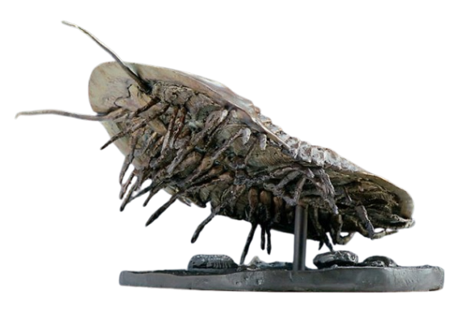
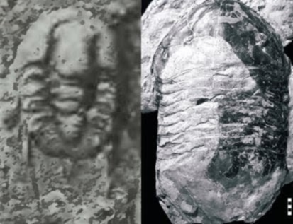

Los artrópodos marinos protagonistas de esta web lograron desarrollar
diversas características físicas que les permitieron tener una amplía gama de
maneras de sobrevivir en los mares paleozoicos.
Primeramente, vamos a abordar su composición física, en específico el porqué de su nombre.
Trilobite viene del griego "τριλοβός" (tres lóbulos) ya que su cuerpo justamente se divide
así, en 3 lóbulos longitudinales, 2 laterales y el axial del centro:

Y, por otro lado, se caracterizan 3 zonas en el cuerpo de estos animales:

Su exoesqueleto estaba formado por principalmente carbonato de calcio, abundante en el oceáno en aquella época. Solía estar cubiertos de espinas, nódulos o surcos, y les servía de coraza para defenderse de peligros y depredadores. La cabeza (el cefalón, como se ve en la imagen) llevaba un par de ojos compuestos y, como dato curioso, fueron pioneros en el desarrollo de los ojos compuestos. Sin embargo, algunas especies eran ciegas, como Cryptolithus, que vivía en aguas turbias y en el fondo marino, donde la visión no sevía de mucho.

El tórax estaba formado por una serie de segmentos articulados; el número
variaba según la especie, desde algunos pocos segmentos hasta decenas de estos que se
extendían hasta el pigidio.
También poseían partes blandas, las patas, que eran apéndices birrameos (de dos ramas)
con los que nadaban, caminaban y respiraban, ya que una de esas ramitas tenía
forma de pluma que intercambiaba oxígeno y le servía de branqueas.

En cuanto a tamaño también varían bastante. La mayoría estaban en el rango de 2-7 cm, pero había algunos diminutos y otros gigantes. Isotelus Rex es la especie con el fósil más grande encontrado hasta ahora, con 72 cm de largo y 40 cm de ancho.

La especie más pequeña encontrada pertenece a Acanthopleurella stipulae, con apenas 1,5 mm de longitud.
